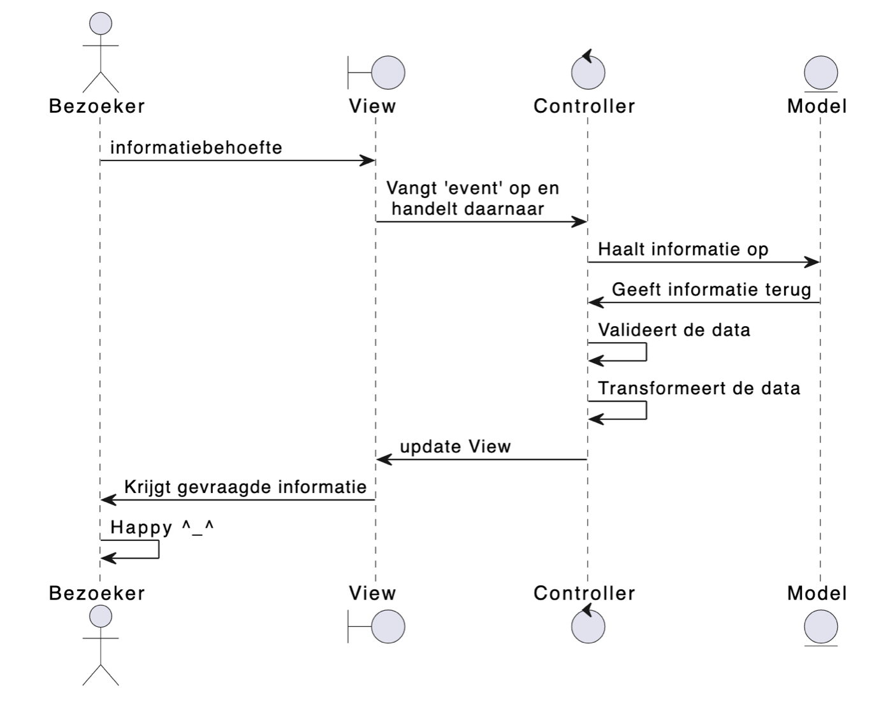
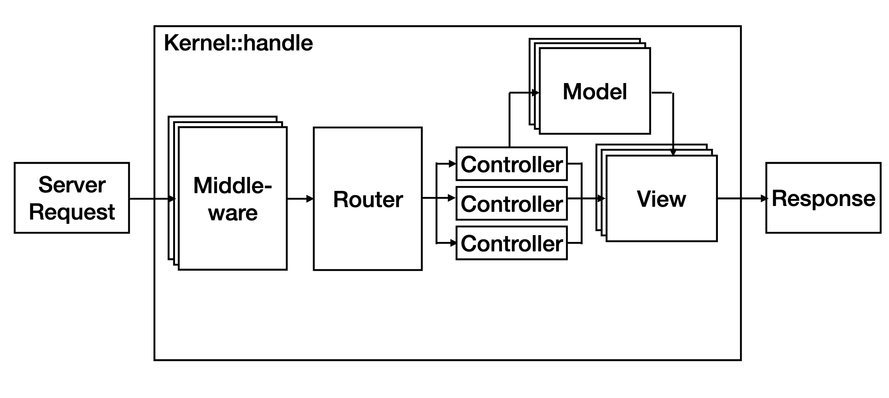
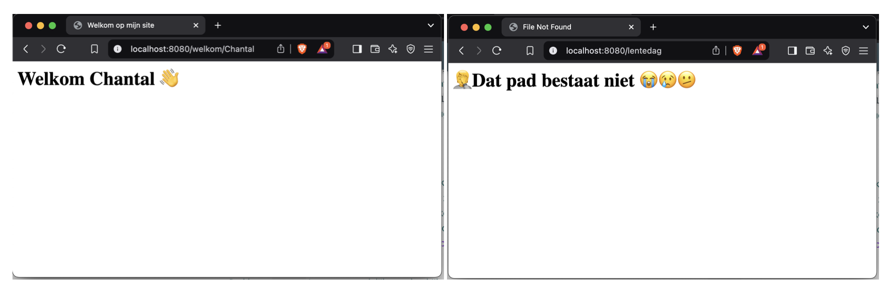

Iteratie 5: Controllers en Routers¶
Hoewel de functionaliteit nu op zich prima werkt, kun je je wel voorstellen dat dit niet schaalt. Hoe meer verschillende paden we in onze applicatie willen opvangen, hoe ingewikkelder onze handle-methode in de Kernel wordt. Dit is een gevolg van het feit dat we alle functionaliteit feitelijk in precies deze methode hebben gestopt. In het kader van seperation of concerns is het veel beter om de verschillende stappen door verschillende klassen uit te laten voeren. Dat is waar de Controllers in beeld komen.
Bekijk nog eens de betreffende dia uit het theoriecollege (zie hieronder). Het gaat hier met name om de onderste helft van dit plaatje. De bezoeker heeft een informatiebehoefte en typt hiervoor een url in de navigatiebalk van de webbrowsers, waardoor een request wordt geïnitieerd. Zoals je ziet wordt dit request opgevangen door een controller, die vervolgens de view update die weer naar de client wordt teruggestuurd. Voor nu negeren we even het model.

Stap 1: de controllers¶
Controllers zijn feitelijk klassen die - via de Kernel – de requests afhandelen. Hierom moeten alle controllers instanties zijn van de RequestHandlerInterface, die je in vendor/psr/http-server-handler/src/RequestHandlerInterface.php kunt vinden.
Bestudeer deze interface. Zoals je ziet heeft deze maar één methode handle(ServerRequestInterface):ResponseInterface. Dit lijkt natuurlijk als twee druppels water op de handle-methode in onze Kernel-klasse, maar controllers zitten nét even ergens anders in de round-trip:
Kernelwordt aangemaakt.ServerRequestObjectwordt aangemaakt.- De methode
handleinKernelwordt aangeroepen. - In deze methode wordt de juiste
Controllervoor dezeRequestgebruikt. - Deze
Controllergeeft de bijhorendeResponseaan deKernelterug. - De
Kernelretourneert dezeResponse. - Deze
Responsewordt naar de client gestuurd.
Zo zie je dat de Kernel de verantwoordelijkheid van het maken van de juiste Response verlegt naar een Controller. Omdat alle controllers dezelfde interface implementeren, maakt het voor de Kernel niet uit wie de response heeft gemaakt: deze klasse is alleen maar geïnteresseerd in dat er een response komt die hij kan terugsturen naar de frontcontroller.
Momenteel hebben we twee pagina's: welkom en weer. Maak een nieuwe directory Controllers met hierin voor beide pagina's een klasse die de RequestHandlerInterface implementeert. Noem de klassen WelkomController en WeerController (je verwacht het niet 😎).
Verplaats de functionaliteit die je tot nu toe in de handle-methode van de Kernel hebt staan naar de handle-methode van de betreffende controller – bedenk zelf een goede techniek om die variabele uit het pad (<naam>) in de WelkomController te krijgen. Gebruik de check die je in Kernel hebt staan om één van beide pagina's te laten zien om een instantie van de juiste controller aan te maken. Roep vervolgens de handle-methode op deze controller aan en retourneer de response die je van de controller terugkrijgt.
Stap 2: de router¶
Onze applicatie begint nu werkelijk te groeien. We kunnen verschillende paden opvragen en afhankelijk hiervan fijn verschillende pagina's laten zien. Het is alleen nog wel een beetje stom dat we onze kernel moeten openen om te zien welke controllers bij welk pad horen - en ook om eventuele nieuwe controllers en nieuwe paden toe te voegen. Dat is wat onhandig, het schaalt niet en past ook niet bij het Single Responsibility Principle. Het is tijd om de klasse Router toe te voegen.
De klasse Router is verantwoordelijk voor het hijbouden welke controller bij welk pad (welke route) hoort. Bekijk nog een keer de betreffende dia uit het hoorcollege:

Bestudeer de interface RoutingInterface, die je kunt vinden in vendor/hanze/itvb21web2-interfaces/src/Routing/RouterInterface.php. Maak een klasse Router in de namespace Framework\Routing die deze interace implementeert. De methode route geeft een RequestHandlerInterface terug, wat natuurlijk onze controllers zijn die we in de stap hierboven hebben gemaakt.
Maak in je frontcontroller een associatieve array met de paden (routes) als key en de controllers als value. Let op: het volledige pad kan natuurlijk iets zijn als welkom/<naam> of blogpost/<id>. Begin met het matchen van de letterlijke string (dus bijvoorbeeld welkom en weer, in ons voorbeeld). Zorg ervoor dat de waarden van deze array de volledige klassenaam van de controller die bij dit pad hoort is. We zullen in de laatste iteratie van deze week dit nog wat uitbreiden.
Maak vervolgens, eveneens in je frontcontroller, een instantie aan van Route, waarbij je deze assiociatieve array meegeeft. Geeft tenslotte deze intantie weer mee aan de Kernel die je al eerder hebt gemaakt (je zult dus de constructor van Kernel ook moeten aanpassen).
Tip
Om in php het volledige pad van een klasse te krijgen, kun je gebruik maken van de syntax KlassseNaam::class.
Pas tenslotte de methode handle in Kernel aan, zodat deze gebruik maakt van de instantie van Route die je bij het aanmaken hiervan hebt meegegeven. Test je resultaat tot zover door een nieuwe route met bijhorende controller en view (html-pagina) te maken. Maak ook een FileNotFoundController met bijhorende pagina en zorg ervoor dat deze controller wordt gebruikt wanneer in de methode route in Router het opgevraagd pad niet bestaat (dat wil zeggen niet in de associatieve array voorkomt).
